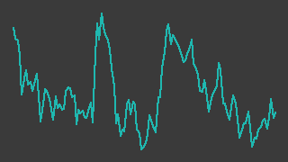

きんでん（1944）
東証プライム／レポート更新 2026-09-04
記述の裏取り 36/67件が裏付けあり／31件は未確認・要修正（検証 2026-08-29）
IR情報 ↗IR新着情報一覧（決算短信・適時開示のPDF） ↗IR BANK ↗株探 ↗

画像判定※・6か月・基準日 2026-09-03一行でいうと：関西電力系の電気設備工事会社。工場や事務所ビルなどの「一般電気工事」が伸びて2026年3月期は売上7,507億円✓・営業利益903億円✓（前期比+48.0%）、営業利益率は12.0%✓まで上がり、手持工事高も過去最高水準にある。一方で2026年4〜6月に、筆頭株主だった関西電力グループから約2,237億円ぶんの自社株を借入で買い取って消却したため、自己資本比率は72.4%✓から49.9%†へ落ち、実質無借金だった財務が純有利子負債に反転した。
週次アップデート最新 2026-W36・全 2 件
新しい週を上に置いている。過去の記述は書き換えず、そのまま残している。
2026-W36（2026-08-31 週）
小幅続伸。こちらもレーティング据え置きの報道あり
- 株価: 週間 +3.5%（6837→7073円・採用終値ベース、照合成立 4日、週内 6998〜7268円）
- 出来高: 前週比 -1.0%（今週 3,251,600株／前週 3,285,800株）※／信用倍率: 16.3倍（買残 275.5千株・売残 16.9千株、08/28時点）※
- 判定: 「見送(トレンド)」／開示: なし
- ニュース: 09/03 レーティング日報【最上位を継続＋目標株価を増額】 (9月3日) 株探 ↗
（解釈）9/3付の「レーティング日報」で最上位評価の継続・目標株価増額が報じられている 出来高はほぼ横ばいで、株価への影響は限定的だったと読める
次週に見ること: ① 特筆すべき開示は無かった。来週も値動きを確認する
2026-W35（2026-08-24 週）
初回レポートを作成した。今週は会社からの開示なし。週末終値どうしで見ると3週続いた下げから反発したが、週足中期移動平均は下向きのままで、台帳の判定は「見送(トレンド)」。
- 株価: 週間 +2.3%（6,820円→6,975円・採用終値ベース、照合成立4日）。週末終値どうしでは6,686円✓→6,975円✓の+4.3%で、3週続いた下げ（7,090→6,971→6,912→6,686円✓）が止まった。8月28日の終値は取得元が1つしかなく（
status=SINGLE_SOURCE）、この台帳の採用値になっていない。参考値は6,837円※（株探 ↗・2026-08-29取得） - 出来高: 今週合計 3,285,800株※（前週3,482,000株※から−5.6%）。8月28日だけ1,153,000株※と厚い
- 信用残: 8月21日時点で買残258.0千株・売残14.4千株・信用倍率17.92倍（
data/margin/1944.csv）。7月24日時点の144.8千株／8.27倍から、買残は4週で+78.2%増えた。台帳の目安（5倍超は過熱）を大きく超えている - 判定:
python src/judge.py基準日2026-08-27の出力は「見送(トレンド)」。①流動性ゲートは通過（20日平均売買代金663,915万円・同期間の中央値507,392万円）、②トレンドゲートで停止（週足13週 −0.685%/週・26週 −0.496%/週でいずれも下向き。最終週は未了のため傾きの計算から除外）。RSI(14) 47.96、25日移動平均乖離率 −1.11%、一目均衡表は雲の下（上端7,651.00／下端7,511.50） - 開示: なし。 会社のIR新着一覧（kinden.co.jp ↗・2026-08-29取得）の最新は7月29日の1Q決算短信と業績参考資料で、8月に入ってからの開示は確認できていない
- ニュース: 今週の株探の配信（株探 ↗・2026-08-29取得）は8/25 MACD・8/26 パラボリックのテクニカル一覧のみで、この銘柄固有の材料は無い。直近の固有ニュースは8月5日の 株探 ↗（JPモルガン・アセットとその共同保有者の保有割合が5.50%・9,156,310株になったとの大量保有報告書。報告義務発生日は7月31日）
（解釈）材料の無い週である。 週間+2.3%は、8月19日の6,570円✓（8月の安値）からの戻りの続きにすぎず、7月28日の7,696円✓には遠い。信用買残が4週で8割近く積み上がっているのは、7月29日の1Q決算（営業利益+89.0%†）を好感して入った買いが含み損のまま滞留している姿と読めるが、断定はしない。JPモルガン・アセット側の5%超えは、買い増しではなく分母が減ったことによる可能性がある——報告された9,156,310株※は、消却前の発行済株式数199,954,180株†で割れば4.58%、消却後の166,454,180株†で割れば5.50%になる（筆者の割り算）。報告書そのものは読んでいないので、増減の内訳は確認していない。
次週に見ること：① 弘電社（1948）の完全子会社化手続きの進捗と、通期業績予想への反映（会社は「精査中」としたまま） ② 信用買残（8月28日時点）が減るか ③ 週足中期移動平均の傾きが上向きに戻るか ④ 2Q決算の発表予定日（master.yaml の next_earnings は未記載）
次期売上・利益推定対象 FY2027-03・作成済み・変数 4 個
作成済み 対象期 FY2027-03・起案 2026-09-05。検証済みデータと明示した仮定から機械計算した概算であり、会社計画でも的中予想でもない。推定 の付いた変数を疑うための頁。
会社計画・市場予想・実績との比較（百万円）
| 指標 | 前期実績 | 会社計画 | 市場予想 | 当台帳推定 | 市場予想比 |
|---|---|---|---|---|---|
| 売上 | 750,742 | — | 825,816 | 820,445 | -0.7% |
| 営業利益 | 90,256 | — | — | 102,556 | — |
市場予想の出所: みんかぶ 証券アナリスト予想（5人: 強気買い3・中立2） 出典 ↗
計算の分解
| セグメント | 式（値を代入） | 売上（百万円） |
|---|---|---|
| 1Q実績（2026年4〜6月・確定分） | 162,369 = 162,369 | 162,369 |
| 2〜4Q（前年同期の売上×伸び） | 609,330 × 1.08 = 658,076.4 | 658,076 |
変数と根拠
カードを押すと、その値の置き方（メモ・出典）が開く。推定 の変数から疑うこと。
1Q実績（2026年4〜6月・確定分）q1_revenue162369実績
data/fundamentals/1944.csv2〜4Q（前年同期の売上×伸び）prev_q2_q4609330実績
data/fundamentals/1944.csv2〜4Q（前年同期の売上×伸び）growth1.08推定
全社op_margin0.125推定
感度 — この推定を最も動かす変数
各変数を +10% したときの営業利益の変化。上にある変数ほど、根拠を厚く確かめる価値がある。ただし op_margin だけは別扱い——営業利益 = 売上合計 × op_margin なので +10% は定義上つねに +10% になり、売上側の変数と大小を比べても意味が無い。
| 変数 | セグメント | 営業利益への影響 |
|---|---|---|
op_margin | 全社 定義上 | +10.0% 乗法モデルなので定義上つねに +10%。売上側の変数との大小比較には意味が無い（率の水準そのものを疑うこと） |
growth | 2〜4Q（前年同期の売上×伸び） | +8.0% |
prev_q2_q4 | 2〜4Q（前年同期の売上×伸び） | +8.0% |
q1_revenue | 1Q実績（2026年4〜6月・確定分） | +2.0% |
推定の変遷
過去の版は書き換えずに残す。数値感がどう変わってきたかが学習の履歴になる。
| 起案日 | 対象期 | 売上 | 営業利益 | 何を変えたか |
|---|---|---|---|---|
| 2026-09-05 | FY2027-03 | 820,445 | 102,556 | 初版（Claude 起案・人間未確認）。1Q実績（確定分）＋残り3四半期（前年同期×伸び）の2区分。 報告セグメントが設備工事業1本で、工事種別（一般電気・配電・環境・情報通信・電力その他）は単体の完成工事高しか 開示が無いため時間軸で分けた。会社計画は売上高 810,000・営業利益 97,000 百万円（2027年3月期第1四半期決算短信 p.1、 https://www.kinden.co.jp/pdf/2026-07-29_2.pdf 取得日 2026-09-05。前期比 +7.9%・+7.5%）。台帳の fundamentals に 計画の採用値が無いので、銘柄ページの会社計画比は空欄になる。弘電社（1948）の完全子会社化は計画にも当推定にも 入れていない（会社は影響を精査中）。推定は売上・営業利益とも会社計画をやや上回る |
会社概要この会社は何者か・財務の推移と健全性・今後の展望とリスク・値動きと市場の評価・出典・検証の記録
この会社は何者か
東証プライム上場、業種は建設業。報告セグメントは「設備工事業（建設事業）」1本だけで、事業別の内訳は開示されない（2027年3月期1Q決算短信のセグメント情報の注記）。発行済株式数は166,454,180株、8月28日の株価6,837円※ベースの時価総額は約1兆1,380億円※（株探・2026-08-29取得）。
会社の出自は戦時にある。1944年8月、当時の軍需省の「電気工事業整備要綱」に基づいて近畿地方の電気工事業者が統合され、関西配電（現・関西電力の前身）の後援のもと近畿電気工事株式会社として大阪市に設立された。資本金は250万円から始まり、いまは264億円†（第112期有価証券報告書）。従業員は連結15,440人†・単体8,676人†（2026年3月31日現在）。
何をして稼いでいるか
定性図（数値を含まない）
工事の中身は5つに分かれる。下表は単体（連結ではない）の2026年3月期実績で、決算短信の参考資料からの転記（†）。
| 工事種別 | 完成工事高（百万円） | 構成比（%） | 手持工事高・期末（百万円） |
|---|---|---|---|
| 一般電気工事 | 405,157 | 66.1 | 427,242 |
| 配電工事 | 80,845 | 13.2 | 15,850 |
| 環境関連工事 | 53,298 | 8.7 | 52,179 |
| 情報通信工事 | 49,575 | 8.1 | 19,010 |
| 電力その他工事 | 23,627 | 3.9 | 67,514 |
| 合計 | 612,505 | 100.0 | 581,797 |
用語をその場で開くと——
- 一般電気工事：ビル・工場などの建物側の電気設備工事。この会社の売上の3分の2で、手持工事高では4分の3を占める。会社は1Qの増加要因として「工場等が増加」（完成工事高）「事務所ビルや商業・娯楽施設等が増加」（受注）を挙げている†
- 配電工事：電柱から先の配電網。会社はこの区分の増減理由を関西電力送配電㈱の工事量で説明しており†、発注元が実質的にそこへ寄っていることがうかがえる
- 手持工事高：受注したがまだ売上になっていない工事の残高。将来の売上の予約にあたる
誰が発注しているか — 関西電力への依存は「約2割」だが、定義に注意
2026年3月期の単体・完成工事高の内訳は、関西電力㈱（関西電力送配電㈱を含む）91,662百万円†（15.0%†）、関西電力グループ19,943百万円†（3.2%†）、一般得意先500,898百万円†（81.8%†）。合わせて約2割が関西電力関係である。
ただし同じ「関西電力」でも、適時開示「支配株主等に関する事項について」（2026年4月27日）は「当期における当社の完成工事高のうち同社から受注した割合は0.2%」と書いている†。これは関西電力㈱（送配電会社を含まない持株側）だけを数えた比率で、決算短信の15.0%†は関西電力送配電㈱を含めた比率である。同じ言葉で別の量を指しているので、どちらの数字も単独では使えない。
資本のねじれ — 筆頭株主が自分の持ち株を会社に売り戻した
これがこの銘柄でいま一番大きな出来事である。
- 2026年3月31日時点で、関西電力グループ（関西電力㈱・関電不動産開発㈱・㈱かんでんエンジニアリング）はきんでん株を73,518,174株†・37.13%†持っていた。関西電力は「その他の関係会社」で、きんでんは同社の関連会社（子会社ではない）
- 2025年11〜12月の協議で関西電力が一部売却の意向を示し、きんでんはこれを自己株式の公開買付けで引き取ることを2026年4月27日に決議した。買付価格は6,677円†（決議前営業日までの3か月終値平均7,502円†に対し11.00%†のディスカウント。前営業日終値7,213円✓に対しては7.43%†）
- 買付期間は4月28日〜6月1日。応募は73,412,898株†（＝関西電力58,905,579株†と関電不動産開発14,507,319株†の全部）で、あん分比例により33,500,000株†・総額約2,237億円†を取得した。全額を株式会社みずほ銀行からの2,300億円の借入†でまかない、6月30日に取得分の全部を消却した†
- この結果、発行済株式数は199,954,180株†から166,454,180株†へ16.75%減り、関西電力グループの持ち分は40,018,174株†・24.33%†になった。会社は関西電力から「残る株式は今後も継続して所有する見込み」との回答を得ているが、あん分比例で買われなかった分については「現状における処分等の方針は未定」との回答も同時に記録している†
関西電力は依然として筆頭株主であり、「その他の関係会社」の地位も変わらない。変わったのは浮動株の量と、きんでんの財務である（後者は次節）。
事業の外へ — 弘電社（1948）の買収
2026年5月25日、きんでんは三菱電機系の電気設備工事会社㈱弘電社（証券コード1948・1917年設立・東京都中央区）に対する公開買付けを決議した†。買付価格は1株11,501円†、期間は5月26日〜7月6日。応募3,714,499株†を全部買い付け、買付総額は約427億円†、議決権所有割合は42.53%†になった。決済開始日の7月13日付で弘電社はきんでんの関連会社になっている†。
買収の理由として会社が挙げているのは、①事業基盤と事業領域の拡大、②三菱電機グループを含む「三菱」を商号に含む企業との取引拡大、③購買力強化である†。同じ開示のなかで会社は業界環境をこう説明している——「旺盛な建築需要と設備投資を背景に堅調に推移し、業界全体の価格転嫁も進み、好調を維持している」「中長期的には優れた技術力を有する働き手の減少が予見されており、建設需要は現状と変わらずとも、供給側の制約により需給ギャップが生じる可能性が高い」†。
全株式取得の手続きが予定どおり実行されれば弘電社は連結子会社になるが、2027年3月期の連結業績予想への影響は「現在精査中」のままで、まだ計画に織り込まれていない†。
この銘柄が台帳に入った理由
segments/ai-datacenter-build.yaml で「D2 電気設備工事（電力会社系サブコン）」の層を数えたときの候補として登録した。層の顔ぶれは電力会社の営業地域ごとに分かれた7社で、有資格者という供給制約のせいで受注を選べる状態にある、というのがこの層に対する見立てである。これは当方の仮説であって、会社の説明ではない。 会社側の言葉として確認できているのは、上に引いた弘電社TOB開示の「価格転嫁が進んでいる」「供給側の制約で需給ギャップが生じうる」までである。
財務の推移と健全性
売上より利益が速い
下表の数値はすべて✓（2ソース照合済みの採用値）。
| 決算期 | 売上高（百万円） | 営業利益（百万円） | 経常利益（百万円） |
|---|---|---|---|
| 2023/3期 | 609,132 | 37,430 | 40,243 |
| 2024/3期 | 654,516 | 42,677 | 45,982 |
| 2025/3期 | 705,058 | 60,979 | 64,546 |
| 2026/3期 | 750,742 | 90,256 | 94,493 |
3年で売上は+23.3%、営業利益は+141.1%になった。営業利益率は8.65%✓（2025年3月期）→12.02%✓（2026年3月期）である。売上の伸びではなく、取り分の変化が利益をつくっている。
出所: data/fundamentals/1944.csv の採用値（別サイト2つ以上が一致した値だけ）。13/13点を採用。
出所: data/fundamentals/1944.csv の採用値（別サイト2つ以上が一致した値だけ）。9/9点を採用。
出所: data/fundamentals/1944.csv の採用値（別サイト2つ以上が一致した値だけ）。8/8点を採用。
四半期で見ると季節性がはっきりしている。工事は年度末（1-3月）に完成が集中するので、1-3月期の利益率が最も高く、4-6月期が最も低い。この形は毎年同じなので、前の四半期と比べても意味がない。同じ四半期どうしを縦に比べる。 そうすると、営業利益は前年同期と並べられる5組すべて、営業利益率は4組すべてが前年を上回っている。
手持工事高 — 将来の売上の予約が積み上がっている
数値はいずれも単体の決算短信からの転記（†。連結の手持工事高は開示されていない）。
| 時点 | 手持工事高（百万円） | 前年同期比（%） |
|---|---|---|
| 2025年3月末 | 472,105 | 5.2 |
| 2026年3月末 | 581,797 | 23.2 |
| 2026年6月末（1Q末） | 759,715 | 22.3 |
2026年6月末の7,597億円†は、単体の年間完成工事高6,125億円†の1.24年ぶんにあたる（筆者の割り算）。うち一般電気工事が570,246百万円†・75.1%†を占め、前年同期比+25.4%†と最も伸びている。
ただし会社自身の受注計画は慎重である。 2027年3月期の単体受注工事高の予想は680,000百万円†で、2026年3月期実績722,197百万円†を5.8%下回る（筆者の割り算）。完成工事高の予想は670,000百万円†（+9.4%†）なので、計画どおりなら手持工事高は横ばい圏になる。
自己株買いで財務が反転した — ここが今の最大の論点
出所: data/fundamentals/1944.csv の採用値（別サイト2つ以上が一致した値だけ）。3/3点を採用。
下表の数値はすべて✓。
| 決算期 | 自己資本比率（%） | 総資産（百万円） | 剰余金（百万円） | 現金同等物（百万円） | 1株純資産（円） | 有利子負債倍率（倍） |
|---|---|---|---|---|---|---|
| 2024/3期 | 70.3 | 815,887 | 453,615 | 180,517 | 2,848.11 | 0.0262 |
| 2025/3期 | 72.9 | 821,693 | 476,757 | 184,662 | 3,014.06 | 0.0249 |
| 2026/3期 | 72.4 | 913,763 | 524,359 | 182,308 | 3,340.44 | 0.0227 |
有利子負債倍率0.0227倍✓は実質無借金を意味する。2026年3月末の短期借入金は15,002百万円†しかなく、現金及び現金同等物182,308百万円✓（会社が「手元流動性」と呼ぶ現金預金＋有価証券では192,549百万円†）が積み上がっていた。master.yaml がこの銘柄に per_netcash（純現金を控除したPER）を割り当てているのは、この形を前提にしている。
2026年6月末、その前提が消えた。 2026年3月末（左）と2026年6月末（右）を並べると次のようになる。
- 短期借入金 15,002百万円† → 245,421百万円†（自己株買いの2,300億円借入）
- 純資産 661,895百万円† → 433,425百万円†（△2,284億円）
- 自己資本比率 72.4%✓ → 49.9%†（△22.5ポイント†）
- 現金及び現金同等物 182,308百万円✓ → 216,258百万円†
- 利益剰余金 524,359百万円✓ → 301,748百万円†（自己株消却でその他資本剰余金が負になった分を利益剰余金から減額したため）
現金216,258百万円†から借入245,421百万円†を引くと約292億円の純有利子負債になる（筆者の引き算）。この会社はネットキャッシュ企業ではなくなった。 1株純資産も、1Q末の自己資本432,889百万円†を期末株式数（自己株控除後）164,481,718株†で割ると約2,632円で、2026年3月末の3,340.44円✓から下がっている。
これは「悪化」ではなく設計された取引である。会社は借入時点で「連結ベースの手元流動性は192,549百万円であり、当社の財務健全性に影響を与えることなく当該借入金の返済を行っていくことが可能」と述べている†。ただし台帳の側から見れば、
valuation_model: per_netcashの前提が変わったことは事実で、次の見直しで確認すべき論点である（master.yamlはこのレポートでは触らない）。
キャッシュフローは下表のとおり（すべて✓）。
| 決算期 | 営業キャッシュフロー（百万円） | 投資キャッシュフロー（百万円） | 財務キャッシュフロー（百万円） | フリーキャッシュフロー（百万円） |
|---|---|---|---|---|
| 2024/3期 | 38,520 | −22,179 | −15,978 | 16,341 |
| 2025/3期 | 24,545 | 3,605 | −24,976 | 28,150 |
| 2026/3期 | 87,684 | −59,884 | −30,155 | 27,800 |
2026年3月期の営業CF 87,684百万円✓は前期の3.6倍で、営業利益90,256百万円✓とほぼ同じ大きさになった。投資CFの−59,884百万円✓には㈱北弘電社（2025年4月1日に連結）の取得が含まれる†。
数値が確かめられていないところ
| 項目 | 状態 | 中身 |
|---|---|---|
| 2022年3月期以前の売上高 | 1サイトのみ | 2002年3月期まで遡れるが株探の10年表しか持っておらず、採用値になっていない。本文でも図でも使っていない |
| 最終利益・1株益 | 1サイトのみ | 2023〜2026年3月期とも株探系のみ。金額は決算短信†と一致するが、2サイト照合は成立していない |
| 有利子負債・自己資本・純資産の金額 | 1サイトのみ | IR BANK または株探の一方だけ。比率（自己資本比率・有利子負債倍率）は✓ |
| 2024年4-6月期以前の四半期利益率 | 1サイトのみ | IR BANK のみ。図の左端がそこで切れている理由 |
| 2027年3月期の会社計画 | 1サイトのみ | 株探のみ。金額は決算短信†と一致する |
| 設備投資額 | 1サイトのみ | IR BANK のみ。しかも2026年3月期の値が投資CFとほぼ同額で、定義が「設備投資」なのか確認できていない。本文では使っていない |
今後の展望とリスク
期待できること
- 手持工事高が過去最高水準——2026年6月末で7,597億円†・前年同期比+22.3%†。将来の売上はすでに取ってある（「財務の推移と健全性」節）
- 利益率が4四半期続けて前年同期を上回っている——季節性を除いても取り分が改善している（同節）
- 会社自身が業界の需給を「供給側の制約」と説明している——弘電社TOBの開示は、価格転嫁が進んでいることと、働き手の減少で需給ギャップが生じうることを会社の言葉で書いている†（「この会社は何者か」節）
- 株主還元が厚い——2027年3月期の配当予想は年240円†（中間120円・期末120円。うち中期経営計画・成長指標達成に伴う特別配当が各50円）。2026年3月期の130円†から大幅増で、連結配当性向は37.1%†→59.0%†の計画。加えて発行済株式数が16.75%減っている
- 1Qの進捗は計画に先行——営業利益13,601百万円✓は通期計画97,000百万円†の14.0%だが、上期計画35,500百万円†に対しては38.3%（筆者の割り算）。前年は1Qの営業利益7,195百万円✓が通期実績90,256百万円✓の8.0%だったので、季節性を考えても遅れてはいない
⚠️ ただし、この銘柄の論点は業績ではなく「資本構成が変わった直後」であること
| リスク | 中身 |
|---|---|
| 財務の反転 | 自己資本比率72.4%✓→49.9%†、実質無借金→純有利子負債約292億円（「財務の推移と健全性」節）。金利が上がる局面では利払いが効いてくる。1Qの支払利息は183百万円†で前年同期の57百万円†から3.2倍 |
| 会社の受注計画が前期割れ | 2027年3月期の単体受注予想680,000百万円†は前期実績722,197百万円†を5.8%下回る。手持工事高の伸びが止まる前提の計画である |
| 利益の伸びが急減速する計画 | 2027年3月期の連結計画は営業利益+7.5%†・経常利益+1.6%†・純利益+0.8%†。前期の営業利益+48.0%✓とは別の景色で、経常・純利益がほぼ横ばいなのは支払利息の増加と、前期にあった受取配当金・特別利益の反動を織り込んでいるとみられる（この解釈は当方のもので、会社の説明ではない） |
| 弘電社の連結影響が未反映 | 「精査中」のまま†。上振れにも下振れにもなりうる。完全子会社化の手続き（スクイーズアウト）の費用と、のれんの扱いが未確認 |
| 関西電力の残り24.33%† | 買われなかった分の処分方針は「未定」†。市場での売り出しがあれば需給の重しになる。逆に「継続保有」と言われている部分もあり、どちらに転ぶかは開示されていない |
| 人件費 | 単体の平均年間給与は約997万円†・前期比+12.3%†（第112期有価証券報告書）。供給制約が利益率を支えている一方で、同じ制約が費用としても効く |
| 需給（信用） | 8月21日時点の信用倍率17.92倍・買残258.0千株（data/margin/1944.csv）。台帳の目安5倍を大きく超える |
| トレンド | 週足13週・26週の移動平均がいずれも下向きで、機械判定は「見送(トレンド)」（「値動きと市場の評価」節） |
何が起きたらストーリーが崩れるか
- 四半期の営業利益率が前年同期を下回る（季節性があるので「前四半期比」では判定しない。4-6月期なら8.38%✓、7-9月期なら13.72%✓が比較の基準）
- 手持工事高が前年同期を下回る（次は2Q決算。単体の参考資料に毎回載る）
- 弘電社の連結が通期計画の下方修正につながる
- 関西電力が残る24.33%†の売却に動く
- 借入2,300億円†の返済が進まず、自己資本比率が50%を割り込んだまま次の投資が必要になる
- 週足中期移動平均が下向きのまま、雲の下から戻らない
値動きと市場の評価
いまどこにいるか
出所: data/prices/daily.csv の採用終値（2つの取得元が一致した終値だけ）。ザラ場の高値・安値は照合を通っていないので使っていない。3/3点を採用、52週の採用終値 242営業日。安値 2025-10-02 / 高値 2026-05-07 / 現在 2026-09-03、図中の印は手書き（未検証）。
直近52週（2025年8月29日〜2026年8月27日）の採用終値の幅は4,930円✓（2025年10月2日）〜8,525円✓（2026年5月7日）。直近の採用終値6,975円✓（2026年8月27日）はその56.9%の位置（筆者の計算）。窓の始まりの5,272円✓（2025年8月29日）からは+32.3%である。
出所: data/prices/daily.csv の採用終値（2つの取得元が一致した終値だけ）。ザラ場の高値・安値は照合を通っていないので使っていない。249/249点を採用、52週の採用終値 242営業日、出来事 7/7件を配置。
この1年に何が起きたか
- 2026年1月29日：3Q決算と同時に通期業績予想を上方修正（営業利益81,000→84,000百万円†）し、期末配当を60→65円†へ増配、あわせて「中期経営計画における資本政策について」を開示。それでも翌1月30日は7,562円✓→6,838円✓（−9.6%）と大きく下げた（出来高1,997,400株※）。下げの理由は特定できていない
- 2026年4月27日：本決算と同時に、自己株式の公開買付け・消却・2,300億円の借入を開示（引け後）。当日終値は6,932円✓（−3.9%）だったが、翌4月28日はストップ高（高値・安値・終値がすべて7,932円✓、出来高279,100株※）、4月30日には8,382円✓まで上げた
- 2026年5月7日：52週高値（終値8,525円✓）
- 2026年5月22日：6,798円✓まで押した（高値から−20.3%）
- 2026年5月25日：弘電社TOBを発表。当日は6,798円✓→7,197円✓（+5.9%）
- 2026年6月12日〜6月22日：6,780円✓→8,367円✓（+23.4%）と急伸。この上げを説明する会社の開示は確認できていない（6月24日の定時株主総会と6月30日の自己株消却が控えていたが、いずれも4月27日に予告済みの日程である）
- 2026年7月29日：1Q決算（15:30開示）。営業利益は前年同期比+89.0%†だったが、当日終値は7,202円✓で前日比−6.4%、翌7月30日は直近1年で最大の出来高3,924,000株※をこなして7,203円✓とほぼ変わらず。好決算のあとに株価が下げている
- 2026年8月19日：6,570円✓まで下押ししたあと、直近は6,975円✓
市場はどう評価しているか
下表はいずれも2026-08-29取得の未照合の転記値（※）。基準となる株価は8月28日の6,837円※で、これ自体もまだ採用値になっていない。
| 見る人 | 評価 | 数字 |
|---|---|---|
| 株探 | 指標 | PER 16.1倍・PBR 2.60倍・配当利回り3.51%・時価総額1兆1,380億円 |
| みんかぶ（総合） | 買い | 目標株価 7,012円（8月28日の株価の約2.6%上） |
| みんかぶ（株価診断） | 割高 | PER（調整後）19.50倍・PBR 1.72倍・PSR 1.51倍 |
| みんかぶ（個人予想） | 売り | — |
| みんかぶ（アナリスト） | 買い | — |
同じ会社のPERが16.1倍※と19.50倍※に割れているのは、どのEPSで割るかの違いである。 株探の16.1倍は会社予想EPSを425.5円※として計算した値、みんかぶの19.50倍は2026年3月期の実績EPS 350.53円†を使った値で、いずれも6,837円※から再現できる（筆者の割り算）。ここで注意がいるのは、株探の会社予想EPS 425.5円※が、会社自身の予想EPS 406.46円†と違うことである。会社の406.46円†は期中平均株式数を前提にしており、425.5円※は消却後の株式数で割り直したとみられるが、確認していない。会社の数字で割れば16.8倍になる。
PBRの2.60倍※と1.72倍※も割れている。2.60倍※のほうは、1Q末の自己資本432,889百万円†÷期末株式数164,481,718株†＝約2,632円を分母にした値と一致する（筆者の計算）。1.72倍※は再現できておらず、根拠は未確認である。
なお、SNSや掲示板の個別の書き込みは、書き手が特定できず検証もできないため採っていない。
鉄則との関係
2026年8月27日基準の機械判定は「見送(トレンド)」。
| 鉄則・ゲートの観点 | 8月27日基準の値 | 判定 |
|---|---|---|
| 流動性（20日平均売買代金3,000万円） | 平均663,915万円・中央値507,392万円 | 通過。板の薄さはこの銘柄の論点ではない |
| 週足中期移動平均が下向きでないか | 13週 −0.685%/週・26週 −0.496%/週 | 下向き。ここで止まる |
| 信用倍率が5倍超えでないか | 17.92倍（8月21日） | 超えている（上流で確定したためゲートとしては評価されていない） |
| RSIが8割超えでないか | 47.96 | 超えていない |
| 移動平均乖離率が7〜8%超えでないか | −1.11%（25日） | 超えていない |
過熱はしていないが、鉄則の第一条（週足中期移動平均線が下向きなら買いで入らない）に引っかかっている。 業績と受注残の形が良いこととは無関係に、この台帳では「見送」になる。
出典
凡例: ✓=2ソース照合済みの採用値 ／ ※=未照合・参考値 ／ †=決算短信（一次情報）から直接
† は会社自身が開示したPDF（決算短信・適時開示・有価証券報告書＝いずれも一次情報）を直接読んだ値である。この銘柄には
data/tanshin/1944.csvがまだ無く、二次情報との2ソース照合を経ていない。
一次情報
| 内容 | 出典 | 取得日 |
|---|---|---|
| IR新着情報一覧（開示の有無と日付の確認） | kinden.co.jp ↗ | 2026-08-29 |
| 2027年3月期 第1四半期決算短信（1Q実績・通期および上期計画・貸借対照表・損益計算書・自己株式の取得と消却の注記・弘電社TOBの後発事象・単体の受注/完成/手持工事高） | kinden.co.jp ↗ | 2026-08-29（開示日2026-07-29） |
| 2026年3月期 決算短信（通期実績・2027年3月期計画・配当・単体の受注/完成/手持工事高） | kinden.co.jp ↗ | 2026-08-29（開示日2026-04-27） |
| 自己株式の取得及び自己株式の公開買付け、自己株式の消却並びに資金の借入れに関するお知らせ（買付価格6,677円・ディスカウント率・2,300億円借入・関西電力グループの持株と売却意向・買付後24.33%） | kinden.co.jp ↗ | 2026-08-29（開示日2026-04-27） |
| 自己株式の公開買付けの結果及び取得終了に関するお知らせ（応募73,412,898株・買付33,500,000株・総額約2,237億円・6月30日消却予定） | kinden.co.jp ↗ | 2026-08-29（開示日2026-06-02） |
| 支配株主等に関する事項について（関西電力の議決権37.2%・完成工事高に占める割合0.2%・出向者3名・取引金額） | kinden.co.jp ↗ | 2026-08-29（開示日2026-04-27） |
| 2026年3月期 通期業績予想の修正及び配当予想の修正（増配）に関するお知らせ（1月29日の上方修正の中身） | kinden.co.jp ↗ | 2026-08-29（開示日2026-01-29） |
| 第112期 有価証券報告書（沿革・従業員数・平均年間給与・大株主の状況・所有者別状況） | kinden.co.jp ↗ | 2026-08-29（提出日2026-06-22） |
二次情報（機械で突き合わせているもの）
| 内容 | 出典 | 取得日 |
|---|---|---|
| 通期の業績推移・財務指標・キャッシュフロー | IR BANK ↗ | 2026-08-29 |
| 四半期推移 | IR BANK ↗ | 2026-08-29 |
| 業績推移・財務・キャッシュフロー | 株探 ↗ | 2026-08-29 |
二次情報（人が読んで書いたもの・未照合）
| 内容 | 出典 | 取得日 |
|---|---|---|
| 8月28日の株価・出来高・PER・PBR・配当利回り・信用倍率・時価総額・発行済株式数・信用区分（貸借銘柄）・比較される銘柄 | 株探 ↗ | 2026-08-29 |
| 銘柄ニュース一覧（今週の固有材料が無いことの確認） | 株探 ↗ | 2026-08-29 |
| JPモルガン・アセットとその共同保有者の保有割合5.50%・9,156,310株・報告義務発生日2026-07-31 | 株探 ↗ | 2026-08-29 |
| 目標株価・株価診断・個人予想・アナリスト評価・PER（調整後）・PBR・PSR | みんかぶ ↗ | 2026-08-29 |
未確認・次に確かめること
- 弘電社の連結が2027年3月期の業績にどう効くか。 会社は「精査中」のままで、売上・利益・のれんのいずれも開示していない。完全子会社化（スクイーズアウト）の日程も未確認
- 関西電力が残す24.33%†の処分方針。 「継続保有の見込み」と「処分方針は未定」が同じ開示に併記されている。変更報告書・大量保有報告書は未確認
- 2026年6月12日〜6月22日の+23.4%の理由。 会社の開示では説明できていない。指数の入れ替えや浮動株比率の見直しによる需給要因の可能性はあるが、確認していない
- 2026年1月30日の−9.6%の理由。 上方修正・増配の翌営業日である。同日開示の「中期経営計画における資本政策について」（kinden.co.jp ↗）の中身をまだ読んでいない
- みんかぶのPBR 1.72倍※の算出根拠。 株探の2.60倍※は1Q末の自己資本と株式数から再現できたが、こちらは再現できていない
- 株探の会社予想EPS 425.5円※と会社自身の406.46円†の差。 期中平均株式数か期末株式数かの違いとみられるが確認していない
- 2027年3月期2Q決算の発表予定日。
master.yamlのnext_earningsは未記載で、会社のIRカレンダーも確認していない - 連結ベースの受注高・手持工事高。 開示されるのは単体のみで、連結子会社25社ぶんが見えていない
- 設備投資額の定義。 IR BANK の「設備投資」が2026年3月期に投資CFとほぼ同額で、何を指しているのか確認できていない
master.yamlのvaluation_model: per_netcashの妥当性。 純現金が消えた（本文参照）ため、次の見直しで確認する必要がある
記述の裏取り
本文の記述を、書いたのとは別の文脈が出典URLを取り直して1件ずつ判定した結果（読み方）。
検証日 2026-08-29検証した記述 67裏付けあり 36この出典では確かめられない（別の出典が要る） 12出典と食い違う 1確かめられない（到達不可・出典なし） 18再取得した出典 14
裏が取れなかった記述
出典を取り直しても確かめられなかったもの。本文に残っているが、確認済みとして読んではいけない。
| 判定 | 本文の記述 | 再取得して分かったこと | 出典 | どうするか |
|---|---|---|---|---|
| この出典では確かめられない（別の出典が要る） | 報告された9,156,310株※は、消却前の発行済株式数199,954,180株†で割れば4.58%、消却後の166,454,180株†で割れば5.50%になる（筆者の割り算） | 割り算は再現できる（9,156,310/166,454,180=5.5008%→5.50%、 9,156,310/199,954,180=4.5792%→4.58%）。分母のうち166,454,180株は株探の再取得 「発行済株式数 | 166,454,180 株」で確認できた。 消却前の199,954,180株は再取得できたどの出典にも無い。 IR BANK の株主情報（2026年3月31日）は「発行済み株式総数 199,824,700株」で 129,480株少なく、単元未満株を含むかどうかの定義差とみられるが確かめられない。 | 二次情報 出典 ↗ 出典 ↗ | 消却前の発行済株式数を機械照合できる出典（決算短信の取り込み等）で残すか、IR BANK の199,824,700株との定義差を注記する |
| 確かめられない（到達不可・出典なし） | 報告セグメントは「設備工事業（建設事業）」1本だけで、事業別の内訳は開示されない（2027年3月期1Q決算短信のセグメント情報の注記） | 出典の1Q決算短信PDFは再取得200だが、この道具はPDFをテキスト化しない （本文は「PDF。この道具はテキスト化しない」の82文字）。 data/tanshin/1944.csv も存在しないので、セグメント注記は確かめられない。 | 一次情報 出典 ↗ | src/fetch_tanshin.py で data/tanshin/1944.csv を作り、機械照合できる形にする |
| 確かめられない（到達不可・出典なし） | 1944年8月、当時の軍需省の「電気工事業整備要綱」に基づいて近畿地方の電気工事業者が統合され、関西配電（現・関西電力の前身）の後援のもと近畿電気工事株式会社として大阪市に設立された。資本金は250万円から始まり | 出典の第112期有価証券報告書は再取得200だがPDFでテキスト化されない。 IR BANK の再取得（200）にも沿革の本文は載っておらず（所在地は 「大阪市北区本庄東二丁目3番41号」まで）、設立年月・軍需省・旧商号・資本金250万円は この文脈では確かめられない。 | 一次情報 出典 ↗ | — |
| 確かめられない（到達不可・出典なし） | | 一般電気工事 | 405,157 | 66.1 | 427,242 | | 転記元の2026年3月期決算短信・業績参考資料はPDFで、再取得200だがテキスト化されない。 表の内部整合のみ確認した: 完成工事高の5行合計は 405,157+80,845+53,298+49,575+23,627=612,502 で、本文の合計612,505と3百万円ずれる。 手持工事高は 427,242+15,850+52,179+19,010+67,514=581,795 で、合計581,797と2百万円ずれる。 いずれも各行の百万円未満切り捨てで説明できる幅だが、原数値を読めないので確かめられない。 構成比は 405,157/612,505=66.15%→66.1% など全行が本文と一致する。 | 一次情報 出典 ↗ | — |
| 確かめられない（到達不可・出典なし） | 関西電力㈱（関西電力送配電㈱を含む）91,662百万円†（15.0%†）、関西電力グループ19,943百万円†（3.2%†）、一般得意先500,898百万円†（81.8%†） | 出典PDFはテキスト化されず金額を確かめられない。内部整合のみ: 91,662+19,943+500,898=612,503（合計612,505と2百万円差）。 比率は 91,662/612,505=14.96%→15.0%、500,898/612,505=81.78%→81.8% と再現できるが、 19,943/612,505=3.256% は四捨五入すると3.3%で、本文の3.2%を丸め値からは再現できない （開示側が原数値で計算していれば起こりうるが確かめられない）。 | 一次情報 出典 ↗ | — |
| 確かめられない（到達不可・出典なし） | 「当期における当社の完成工事高のうち同社から受注した割合は0.2%」と書いている† | 出典「支配株主等に関する事項について」は再取得200だがPDFでテキスト化されない。 IR新着一覧（再取得200）に「2026.04.27 お知らせ 支配株主等に関する事項について [PDF 1ページ / 123KB]」があり開示の存在と日付は裏付けられるが、 引用文と0.2%という数値は確かめられない。 | 一次情報 出典 ↗ | — |
| この出典では確かめられない（別の出典が要る） | 関西電力グループ（関西電力㈱・関電不動産開発㈱・㈱かんでんエンジニアリング）はきんでん株を73,518,174株†・37.13%†持っていた | IR BANK の再取得（200）の大株主（2026年3月31日）は「関西電力 29.75%」 「関電不動産開発 7.33%」で合計37.08%。かんでんエンジニアリングは大量保有の 提出者一覧にはあるが大株主上位には出ていない。37.13%は方向として整合するが一致せず、 73,518,174株という株数はどの再取得可能な出典にも無い（比率の分母が 自己株控除後かどうかも確かめられない）。 | 二次情報 出典 ↗ | 株数と比率の分母（発行済総数か自己株控除後か）を機械照合できる出典で残す |
| 確かめられない（到達不可・出典なし） | 買付価格は6,677円†（決議前営業日までの3か月終値平均7,502円†に対し11.00%†のディスカウント。前営業日終値7,213円✓に対しては7.43%†） | 出典の適時開示は再取得200だがPDFでテキスト化されない。 前営業日終値7,213円は data/prices/daily.csv の 2026-04-24 の採用終値（status OK）と一致し、 (7213-6677)/7213=7.431%→7.43%、(7502-6677)/7502=10.997%→11.00% と割り算は再現できる。 ただし6,677円と7,502円そのものは確かめられない。 | 一次情報 出典 ↗ | — |
| 確かめられない（到達不可・出典なし） | 応募は73,412,898株†（＝関西電力58,905,579株†と関電不動産開発14,507,319株†の全部） | 出典「自己株式の公開買付けの結果及び取得終了に関するお知らせ」は再取得200だが PDFでテキスト化されない。IR新着一覧（再取得200）に「2026.06.02 お知らせ 自己株式の公開買付けの結果及び取得終了に関するお知らせ [PDF 4ページ / 227KB]」があり 開示の存在は裏付けられる。内部整合は成立する（58,905,579+14,507,319=73,412,898）。 | 一次情報 出典 ↗ | — |
| 確かめられない（到達不可・出典なし） | 全額を株式会社みずほ銀行からの2,300億円の借入†でまかない、6月30日に取得分の全部を消却した† | 借入先・借入額・消却日はいずれもPDF（再取得200・テキスト化されず）にしか無い。 IR新着一覧（再取得200）にも6月30日付の消却完了の開示は載っていない （6月台は 06.02 買付結果／06.15 投資単位の引下げ／06.22 有報／06.24 総会・株主通信・自己株処分）。 | 一次情報 出典 ↗ | 消却の完了開示（または短信の注記）を出典表に足すか、6月30日という日付の根拠を示す |
| この出典では確かめられない（別の出典が要る） | 発行済株式数は199,954,180株†から166,454,180株†へ16.75%減り、関西電力グループの持ち分は40,018,174株†・24.33%†になった | 消却後の166,454,180株は株探の再取得で確認（V11）。 内部整合は成立する（166,454,180+33,500,000=199,954,180、33,500,000/199,954,180=16.754%→16.75%、 73,518,174-33,500,000=40,018,174、40,018,174/164,481,718=24.330%→24.33%）。 しかし消却前の199,954,180株・関西電力グループの40,018,174株・24.33%は 再取得できたどの出典にも無い（IR BANK の2026年3月31日の発行済み株式総数は199,824,700株）。 | 二次情報 出典 ↗ 出典 ↗ | V10 と同じ。消却前株式数と買付後の持株比率を機械照合できる形で残す |
| 確かめられない（到達不可・出典なし） | 買付価格は1株11,501円†、期間は5月26日〜7月6日。応募3,714,499株†を全部買い付け、買付総額は約427億円†、議決権所有割合は42.53%†になった。決済開始日の7月13日付で弘電社はきんでんの関連会社になっている† | この記述の出典URLがレポートに書かれていない。 出典表の一次情報8件に 弘電社TOBの開示（2026年5月25日の開始・2026年7月7日の結果）が無く、 fetch_source.py は本文に無いURLを取りに行けない。 IR新着一覧の再取得（200）には「2026.05.25 株式会社弘電社の株券に対する公開買付けの 開始に関するお知らせ [PDF 65ページ / 922KB]」と「2026.07.07 株式会社弘電社 (証券コード：1948)の株券に対する公開買付けの結果及び関連会社の異動に関するお知らせ [PDF 9ページ / 390KB]」が実在し、開示の存在・日付・関連会社化という事実の方向は 裏付けられるが、価格・株数・総額・42.53%・7月13日という個別の数値は確かめられない。 内部整合のみ: 3,714,499×11,501=42,720,452,999円≒427億円。 | 出典なし — | 2026-05-25 と 2026-07-07 の弘電社TOB開示のURLを出典表に足す |
| 確かめられない（到達不可・出典なし） | 「旺盛な建築需要と設備投資を背景に堅調に推移し、業界全体の価格転嫁も進み、好調を維持している」 | 会社の言葉としての直接引用だが、引用元（弘電社TOB開示）のURLが本文に無い（V25 と同じ）。 再取得できるどのページにもこの文字列は無い。「会社自身の言葉」として 期待できることの3番目の根拠になっているので、出典が要る。 | 出典なし — | 引用元の開示URLを出典表に足す（無ければ引用を落とす） |
| 確かめられない（到達不可・出典なし） | 2027年3月期の連結業績予想への影響は「現在精査中」のままで、まだ計画に織り込まれていない† | 1Q決算短信PDF（再取得200・テキスト化されず）にしか根拠が無く、「精査中」という 文言は確かめられない。IR新着一覧にも7月7日以降に業績予想の修正開示は無い （最新は7月29日の短信と業績参考資料）ので、予想が据え置かれていること自体は整合する。 | 一次情報 出典 ↗ | — |
| 確かめられない（到達不可・出典なし） | 2026年6月末の7,597億円†は、単体の年間完成工事高6,125億円†の1.24年ぶんにあたる（筆者の割り算）。うち一般電気工事が570,246百万円†・75.1%†を占め、前年同期比+25.4%†と最も伸びている | 単体の受注・完成・手持工事高は1Q決算短信の参考資料にしか無く、PDFはテキスト化されない。 割り算のみ再現: 759,715/612,505=1.2403→1.24年、570,246/759,715=75.06%→75.1%。 前年同期比+25.4%は前年同期の値が無いので再現できない。 | 一次情報 出典 ↗ | — |
| 確かめられない（到達不可・出典なし） | 2027年3月期の単体受注工事高の予想は680,000百万円†で、2026年3月期実績722,197百万円†を5.8%下回る（筆者の割り算）。完成工事高の予想は670,000百万円†（+9.4%†） | 単体の受注・完成工事高の会社予想は決算短信の参考資料のみで、PDFはテキスト化されない。 割り算は再現できる: 680,000/722,197-1=-5.843%→5.8%下回る、 670,000/612,505-1=+9.387%→+9.4%。元の3値そのものは確かめられない。 | 一次情報 出典 ↗ | — |
| 確かめられない（到達不可・出典なし） | 短期借入金 15,002百万円† → 245,421百万円†（自己株買いの2,300億円借入） | 期首の15,002百万円は IR BANK で裏付けられる（V34）が、1Q末の245,421百万円は 1Q決算短信の貸借対照表にしか無く、PDFはテキスト化されない。 245,421-15,002=230,419百万円で「2,300億円の借入」と整合する向きだが確かめられない。 同じ節の純資産433,425百万円†・現金216,258百万円†・利益剰余金301,748百万円†も同様に確かめられない。 | 一次情報 出典 ↗ | — |
| 確かめられない（到達不可・出典なし） | 現金216,258百万円†から借入245,421百万円†を引くと約292億円の純有利子負債になる（筆者の引き算） | 引き算は再現できる（245,421-216,258=29,163百万円=約292億円）が、両方の元の値が テキスト化されないPDFにしか無い。なお本文は短期借入金だけを「借入」として引いており、 リース債務等を含む有利子負債総額ではない（1Q末の有利子負債総額は確かめられない）。 | 一次情報 出典 ↗ | — |
| 確かめられない（到達不可・出典なし） | 連結配当性向は37.1%†→59.0%†の計画 | 配当性向は決算短信にしか無く、PDFはテキスト化されない。 130/350.53=37.09%→37.1%、240/406.46=59.05%→59.0% と割り算は再現できるが、 分母の会社予想EPS 406.46円が確かめられない（V47 と同じ問題）。 同じ文の「特別配当が各50円」もPDFのみで確かめられない。 | 一次情報 出典 ↗ | — |
| この出典では確かめられない（別の出典が要る） | 営業利益13,601百万円✓は通期計画97,000百万円†の14.0%だが、上期計画35,500百万円†に対しては38.3%（筆者の割り算） | 1Qの営業利益13,601は採用値（OK|ROUNDING）で正しい。割り算も再現できる （13,601/97,000=14.02%、13,601/35,500=38.31%、前年の 7,195/90,256=7.97%→8.0%）。 しかし分母の計画値は採用値ではない: data/fundamentals の FY2027-03 operating_income_plan=97,000 と H2026-04_2026-09 operating_income_plan=35,500 は どちらも status=SINGLE_SOURCE（株探のみ）で、D7 により裏付けに使えない。 一次情報側の決算短信PDFはテキスト化されない。 | 検証済みデータdata/fundamentals/1944.csv | data/tanshin/1944.csv を作って計画値を2ソース照合に載せる |
| この出典では確かめられない（別の出典が要る） | 2027年3月期の連結計画は営業利益+7.5%†・経常利益+1.6%†・純利益+0.8%† | 株探の再取得（200）の業績推移の「前期比(%)」行に経常 +1.6・最終 +0.8 が実在し、 この2つは裏付けられる。営業利益+7.5%はこのページに営業益の列が無く、 再取得できた出典のどこにも無い（97,000/90,256-1=+7.47% と計算はできるが、 分母の計画値97,000は SINGLE_SOURCE で採用値ではない・V44）。 | 二次情報 出典 ↗ | 営業利益の計画値を2ソース照合に載せるか、+7.5%を SINGLE_SOURCE 由来と明示する |
| 確かめられない（到達不可・出典なし） | 1Qの支払利息は183百万円†で前年同期の57百万円†から3.2倍 | 支払利息は1Q決算短信の損益計算書にしか無く、PDFはテキスト化されない。 183/57=3.21→3.2倍 と割り算は再現できるが、両方の値は確かめられない。 | 一次情報 出典 ↗ | — |
| この出典では確かめられない（別の出典が要る） | 単体の平均年間給与は約997万円†・前期比+12.3%†（第112期有価証券報告書） | IR BANK の再取得（200）に「平均年収 997万円」があり水準は裏付けられる。 前期比+12.3%は再取得できた出典に無い（前期の平均年収が載っておらず、 997/1.123=887.8万円という前期値を確かめる手段がこの文脈には無い）。 | 二次情報 出典 ↗ | — |
| この出典では確かめられない（別の出典が要る） | 3Q決算と同時に通期業績予想を上方修正（営業利益81,000→84,000百万円†）し、期末配当を60→65円†へ増配 | IR新着一覧の再取得（200）に「2026.01.29 決算情報 2026年3月期 通期業績予想の修正及び 配当予想の修正（増配）に関するお知らせ [PDF 2ページ / 140KB]」「2026.01.29 決算情報 2026年3月期 第3四半期決算短信」「2026.01.29 お知らせ 中期経営計画における資本政策について」 が実在し、開示の日付・題名・同日開示という構図は裏付けられる。 しかし修正額（81,000→84,000）と配当（60→65円）は当該PDF（再取得200）が テキスト化されず確かめられない。 | 一次情報 出典 ↗ 出典 ↗ | — |
| この出典では確かめられない（別の出典が要る） | 翌4月28日はストップ高（高値・安値・終値がすべて7,932円✓、出来高279,100株※）、4月30日には8,382円✓まで上げた | 2026-04-28 は open=high=low=close=7,932・volume=279,100（status OK）で、 事実関係は daily.csv と一致する（前日 2026-04-27 close=6,932 に対し値幅制限 +1,000円ちょうど）。4/30 の close=8,382 も一致。 ただし ✓ は本文の凡例で「2ソース照合済みの採用値」と定義されており、 daily.csv の照合対象（value_primary / value_secondary）は終値だけである。 高値・安値は照合を通っておらず、レポート自身の front matter も 「ザラ場の高値・安値は照合を通っていないので使わない」と書いている。 高値・安値に付いた ✓ はこの出典では裏付けられない。 | 検証済みデータdata/prices/daily.csv | 高値・安値の ✓ を外す（※ か「同値」という書き方に改める） |
| この出典では確かめられない（別の出典が要る） | この上げを説明する会社の開示は確認できていない（6月24日の定時株主総会と6月30日の自己株消却が控えていたが、いずれも4月27日に予告済みの日程である） | IR新着一覧の再取得（200）には、この上げの期間内にあたる 「2026.06.15 お知らせ 投資単位の引下げに関する考え方及び方針について [PDF 1ページ / 122KB]」が実在する。株価は6月12日終値6,780円から 6月15日終値7,304円（+7.7%）へ動いており、本文の括弧内が挙げる 6月24日の総会・6月30日の消却だけが「控えていた」わけではない。 この開示を検討したうえで「説明できない」と言えるかは、本文からは分からない。 | 一次情報 出典 ↗ | 6月15日の「投資単位の引下げに関する考え方及び方針について」を検討対象に入れて記述し直す |
| 確かめられない（到達不可・出典なし） | | みんかぶ（総合） | 買い | 目標株価 7,012円（8月28日の株価の約2.6%上） | | https://minkabu.jp/stock/1944 は2回とも HTTP 403 で本文を取得できなかった （fetch_log に2件残っている）。目標株価7,012円・総合「買い」・株価診断「割高」・ 個人予想「売り」・アナリスト「買い」・PER（調整後）19.50倍・PBR 1.72倍・PSR 1.51倍は いずれもこの文脈では確かめられない。price_range 図のマーカー 「みんかぶ目標株価 7,012」も同じ。7,012/6,837-1=+2.56%→約2.6%上 という 割り算だけは再現できる。 | 二次情報 出典 ↗ | みんかぶが403で取れない状態が続くなら、目標株価の出典を別に立てるか図のマーカーを落とす |
| この出典では確かめられない（別の出典が要る） | みんかぶの19.50倍は2026年3月期の実績EPS 350.53円†を使った値で、いずれも6,837円※から再現できる | 実績EPS 350.53円は IR BANK の再取得（200）に「EPS（連） 350.53 円/株」として実在し、 6,837/350.53=19.505→19.50 という計算も再現できる。 しかし「みんかぶが19.50倍と表示している」ことは minkabu が403で確かめられない（V58）。 | 二次情報 出典 ↗ | — |
| この出典では確かめられない（別の出典が要る） | 株探の会社予想EPS 425.5円※が、会社自身の予想EPS 406.46円†と違う | 株探側の425.5円は再取得で確認できる（V59）。会社自身の406.46円は決算短信PDFにしかなく、 テキスト化されないので確かめられない。 6,837/406.46=16.82→16.8倍 という 本文の計算だけは再現できる。 | 二次情報 出典 ↗ | — |
| この出典では確かめられない（別の出典が要る） | | 2027年3月期 第1四半期決算短信（1Q実績・通期および上期計画・貸借対照表・損益計算書・自己株式の取得と消却の注記・弘電社TOBの後発事象・単体の受注/完成/手持工事高） | <https://www.kinden.co.jp/pdf/2026-07-29_2.pdf> | 2026-08-29（開示日2026-07-29） | | 一次情報の表に載る8件のURLはすべて再取得で HTTP 200 だが、8件とも PDF で fetch_source.py はテキスト化しない（本文は82文字の定型メッセージ）。 そのためURLと記載内容の対応（このURLが本当に1Q決算短信か、そこに列挙された 項目が載っているか）は、この文脈では1件も確かめられない。 data/tanshin/1944.csv も無いので委譲先も無い。 加えて、本文が † で引いている弘電社TOB（2026-05-25・2026-07-07）の開示URLが この表に無い（V25/V26）。 | 一次情報 出典 ↗ | src/fetch_tanshin.py で data/tanshin/1944.csv を作る／弘電社TOB開示のURLを表に足す |
| 出典と食い違う | - 2026年6月15〜22日の+23.4%の理由。 会社の開示では説明できていない | 採用終値では 2026-06-15 close=7,304、2026-06-22 close=8,367 で 8367/7304-1=+14.55% であり、+23.4% にならない。 +23.4% は本文が「値動きと市場の評価」節で書いているとおり 6月12日終値6,780円を起点にした値である（8367/6780-1=+23.41%）。 同じレポートの中で同じ上げに違う期間が付いており、この行の期間は誤り。 | 検証済みデータdata/prices/daily.csv | 本文と同じ「2026年6月12日〜6月22日」に直す |
裏付けが取れた記述 36件
| 判定 | 本文の記述 | 再取得して分かったこと | 出典 | どうするか |
|---|---|---|---|---|
| 裏付けあり | 株価: 週間 +2.3%（6,820円→6,975円・採用終値ベース、照合成立4日） | 8/24〜8/28 の 1944 行のうち status に OK を含むのは 8/24=6,820・8/25=6,861・ 8/26=6,950・8/27=6,975 の4日（8/28 は SINGLE_SOURCE）。照合成立4日は一致。 採用終値どうしの式 6975/6820-1=+2.2727% → +2.3%。 | 検証済みデータdata/prices/daily.csv | — |
| 裏付けあり | 週末終値どうしでは6,686円✓→6,975円✓の+4.3%で、3週続いた下げ（7,090→6,971→6,912→6,686円✓）が止まった | 各週末（金）の採用終値は 7/31=7,090・8/7=6,971・8/14=6,912・8/21=6,686 で 3週続落は一致。6975/6686-1=+4.3225% → +4.3%。 今週の比較先が 8/28 ではなく 8/27 なのは 8/28 が SINGLE_SOURCE のためで、 本文もそう断っている。 | 検証済みデータdata/prices/daily.csv | — |
| 裏付けあり | 8月28日の終値は取得元が1つしかなく（status=SINGLE_SOURCE）、この台帳の採用値になっていない。参考値は6,837円※ | daily.csv の 2026-08-28/1944 行は close 空・status=SINGLE_SOURCE。 株探の再取得（200）に「終値 | 6,837 | ( 15:30 )」があり参考値6,837円と一致。 | 検証済みデータdata/prices/daily.csv 出典 ↗ | — |
| 裏付けあり | 出来高: 今週合計 3,285,800株※（前週3,482,000株※から−5.6%）。8月28日だけ1,153,000株※と厚い | 今週 612,800+529,400+525,600+465,000+1,153,000=3,285,800。 前週 604,900+636,700+994,400+803,800+442,200=3,482,000。 3285800/3482000-1=-5.634% → -5.6%。株探の再取得にも「出来高 | 1,153,000 株」（08月28日）。 | 検証済みデータdata/prices/daily.csv 出典 ↗ | — |
| 裏付けあり | 信用残: 8月21日時点で買残258.0千株・売残14.4千株・信用倍率17.92倍（data/margin/1944.csv）。7月24日時点の144.8千株／8.27倍から、買残は4週で+78.2%増えた | margin/1944.csv 最終行 2026-08-21 long=258.0 short=14.4 ratio=17.92（status OK）、 2026-07-24 long=144.8 ratio=8.27。258.0/144.8-1=+78.177% → +78.2%。 株探の再取得の信用取引表も 08/21 14.4/258.0/17.92、07/24 17.5/144.8/8.27 で一致。 | 検証済みデータdata/margin/1944.csv 出典 ↗ | — |
| 裏付けあり | ①流動性ゲートは通過（20日平均売買代金663,915万円・同期間の中央値507,392万円）、②トレンドゲートで停止（週足13週 −0.685%/週・26週 −0.496%/週でいずれも下向き。最終週は未了のため傾きの計算から除外）。RSI(14) 47.96、25日移動平均乖離率 −1.11%、一目均衡表は雲の下（上端7,651.00／下端7,511.50） | python src/judge.py --indicators-only の 1944（as_of 2026-08-27）は avg_turnover_20d=6,639,149,155円（=663,915万円）、median_turnover_20d=5,073,924,000円 （=507,392万円）、weekly_ma_mid_slope_pct=-0.6850352（13週）、 weekly_ma_long_slope_pct=-0.4964052（26週）、いずれも direction=down、 rsi14=47.96418、ma_deviation_pct=-1.10816、ichimoku_position=below。 judge.py の weekly_trend_periods は [13, 26]。 雲の上下端は指標出力に無いため src/indicators.ichimoku を同じ bars（judge.load_bars('1944')・269本） に当てて再計算し、cloud_top=7651.0／cloud_bottom=7511.5 を得た（本文と一致）。 | 検証済みデータsrc/judge.py data/prices/daily.csv | — |
| 裏付けあり | 会社のIR新着一覧（<https://www.kinden.co.jp/ir/news/>・2026-08-29取得）の最新は7月29日の1Q決算短信と業績参考資料で、8月に入ってからの開示は確認できていない | 再取得（200）の一覧先頭は「2026.07.29 決算情報 2027年3月期 第1四半期決算短信」 「2026.07.29 業績参考資料 2027年3月期 第1四半期業績参考資料」で、 2026.08 の行は1件も無い（次が 2026.07.23）。 | 一次情報 出典 ↗ | — |
| 裏付けあり | は8/25 MACD・8/26 パラボリックのテクニカル一覧のみで、この銘柄固有の材料は無い | 再取得（200）の一覧で 8/24〜8/28 に載るのは 「26/08/26 15:38 テク 本日の【パラボリック｜買い／売り・転換】引け」と 「26/08/25 15:38 テク 本日の【ＭＡＣＤ｜買い／売りサイン】引け」の2件のみ。 その次は 26/08/05 の大量保有報告。 | 二次情報 出典 ↗ | — |
| 裏付けあり | JPモルガン・アセットとその共同保有者の保有割合が5.50%・9,156,310株になったとの大量保有報告書。報告義務発生日は7月31日 | 再取得（200）に「ＪＰモルガン・アセットと共同保有者のきんでん株式保有比率は5.50％となり、 新たに5％を超えたことが判明した。報告義務発生日は7月31日。」および 「2026/07/31 ― ％ → 5.50％ 9,156,310 2026/08/05 11:35」。 | 二次情報 出典 ↗ | — |
| 裏付けあり | 発行済株式数は166,454,180株、8月28日の株価6,837円※ベースの時価総額は約1兆1,380億円※（株探・2026-08-29取得） | 再取得（200）に「発行済株式数 | 166,454,180 株」「時価総額 | 1 兆 1,380 億円」 「終値 | 6,837」。166,454,180×6,837=1,138,047,228,660円で1兆1,380億円と整合。 | 二次情報 出典 ↗ | — |
| 裏付けあり | いまは264億円†（第112期有価証券報告書）。従業員は連結15,440人†・単体8,676人†（2026年3月31日現在） | IR BANK の再取得（200）に「資本金 264億1100万円」「従業員数 連結 15,440名 単体 8,676名」。 本文の3つの数値と一致する（一次情報のPDFは読めていないので、裏付けは二次情報側）。 | 二次情報 出典 ↗ | — |
| 裏付けあり | 合わせて約2割が関西電力関係である | 株探の再取得（200）の会社情報・概要に「電設工事でトップ級。関電系で依存度約2割。 情報通信工事など全国展開。」とあり、約2割という水準はこの出典で裏付けられる。 本文の内訳（15.0%+3.2%=18.2%）とも整合する。 | 二次情報 出典 ↗ | — |
| 裏付けあり | あん分比例により33,500,000株†・総額約2,237億円†を取得した | IR BANK の再取得（200）の自社株買い欄に「2026年 +2136億7983万 2236億7950万」とあり、 2026年の取得総額2,236億7,950万円が実在する。 33,500,000株×6,677円=223,679,500,000円=2,236億7,950万円で完全に一致するので、 株数と総額（および買付価格6,677円）はこの二次情報で裏付けられる。 | 二次情報 出典 ↗ | — |
| 裏付けあり | | 2026/3期 | 750,742 | 90,256 | 94,493 | | FY2026-03 の revenue=750742（OK|ROUNDING・kabutan_fy と irbank_q を含む2サイト）、 operating_income=90256（同）、ordinary_income=94493（同）。表の他の3期も FY2023-03 609132/37430/40243、FY2024-03 654516/42677/45982、 FY2025-03 705058/60979/64546 がすべて採用値と一致し、 本文の「下表の数値はすべて✓（2ソース照合済みの採用値）」も成立している。 | 検証済みデータdata/fundamentals/1944.csv | — |
| 裏付けあり | 3年で売上は+23.3%、営業利益は+141.1%になった。営業利益率は8.65%✓（2025年3月期）→12.02%✓（2026年3月期）である | 採用値どうしの式で 750742/609132-1=+23.248%→+23.3%、90256/37430-1=+141.13%→+141.1%。 operating_margin は FY2025-03=8.65（OK）・FY2026-03=12.02（OK）で一致。 | 検証済みデータdata/fundamentals/1944.csv | — |
| 裏付けあり | 営業利益は前年同期と並べられる5組すべて、営業利益率は4組すべてが前年を上回っている | 採用値の営業利益（すべて OK|ROUNDING）: 4-6月 1,963→7,195→13,601、 7-9月 10,913→24,692、10-12月 17,831→20,070、1-3月 30,272→38,299。 前年同期と並ぶ組は5つで、全て増加。営業利益率は 4-6月 5.09→8.38、 7-9月 6.62→13.72、10-12月 10.71→11.28、1-3月 12.59→15.23 の4組で全て上昇。 図の caption（q_op・q_margin）の数値もこの採用値と一致する。 | 検証済みデータdata/fundamentals/1944.csv | — |
| 裏付けあり | | 2026/3期 | 72.4 | 913,763 | 524,359 | 182,308 | 3,340.44 | 0.0227 | | FY2026-03 の equity_ratio=72.4（OK）・total_assets=913763・retained_earnings=524359・ cash_equivalents=182308・bps=3340.44・interest_bearing_debt_ratio=0.0227 が すべて採用値と一致。IR BANK の再取得も総資産9137億6300万・利益剰余金5243億5900万・ 現金及び現金同等物の残高1823億800万で整合する。 | 検証済みデータdata/fundamentals/1944.csv 出典 ↗ | — |
| 裏付けあり | 有利子負債倍率0.0227倍✓は実質無借金を意味する。2026年3月末の短期借入金は15,002百万円†しかなく、現金及び現金同等物182,308百万円✓ | IR BANK の再取得（200）の貸借対照表欄に「有利子負債 +0.44% 150億200万」＝15,002百万円が あり、本文の短期借入金15,002百万円と一致する。 現金及び現金同等物182,308百万円と有利子負債倍率0.0227倍は data/fundamentals の採用値。 | 二次情報data/fundamentals/1944.csv 出典 ↗ | — |
| 裏付けあり | 自己資本比率 72.4%✓ → 49.9%†（△22.5ポイント†） | 72.4%は FY2026-03 equity_ratio の採用値（OK）。 IR BANK の再取得（200）の株式指標欄に「株主資本比率（連） 49.91%」があり、 1Q末の49.9%を裏付ける。72.4-49.9=22.5ポイントも一致。 | 二次情報data/fundamentals/1944.csv 出典 ↗ | — |
| 裏付けあり | 1Q末の自己資本432,889百万円†を期末株式数（自己株控除後）164,481,718株†で割ると約2,632円 | IR BANK の再取得（200）の株式指標に「BPS（連） 2631.83 円/株」があり、 本文の約2,632円と一致する（432,889,000,000/164,481,718=2,631.85）。 割り算の入力2値そのものはPDF由来で確かめられないが、結果は二次情報で裏付けられる。 | 二次情報 出典 ↗ | — |
| 裏付けあり | 2026年3月期の営業CF 87,684百万円✓は前期の3.6倍で、営業利益90,256百万円✓とほぼ同じ大きさになった | operating_cf は FY2025-03=24545・FY2026-03=87684（ともに OK|ROUNDING）。 87684/24545=3.572→3.6倍。営業利益90256も採用値。 CF表の他の値（investing_cf -22179/3605/-59884、financing_cf -15978/-24976/-30155、 free_cf 16341/28150/27800）もすべて採用値と一致する。 | 検証済みデータdata/fundamentals/1944.csv | — |
| 裏付けあり | | 2024年4-6月期以前の四半期利益率 | 1サイトのみ | IR BANK のみ。図の左端がそこで切れている理由 | | Q2024-04_2024-06 以前の operating_margin はすべて status=SINGLE_SOURCE で sources_all が irbank_q 単独（例: Q2024-04_2024-06 irbank_q=1.47）。 採用値になるのは Q2024-07_2024-09 以降で、q_margin の periods の左端と一致する。 | 検証済みデータdata/fundamentals/1944.csv | — |
| 裏付けあり | | 設備投資額 | 1サイトのみ | IR BANK のみ。しかも2026年3月期の値が投資CFとほぼ同額で、定義が「設備投資」なのか確認できていない。本文では使っていない | | capex は全期 SINGLE_SOURCE で sources_all は irbank_cf 単独。 FY2026-03 の capex=-59,900 に対し investing_cf の採用値は -59,884 でほぼ同額。 IR BANK の再取得にも「投資額 設備投資 599億1500万円」があり同じ値。 本文の「定義が確認できていない」という自己申告は妥当である。 | 検証済みデータdata/fundamentals/1944.csv 出典 ↗ | — |
| 裏付けあり | 2027年3月期の配当予想は年240円† | 株探の再取得（200）の業績推移に「予 2027.03 | 8,100 | 960 | 700 | 425.5 | 240」、 2026.03 の1株配は130。IR BANK にも「配当利回り 予 3.44% (240)」。 240/6,837=3.510% は株探の「利回り 3.51 ％」とも整合する。 | 二次情報 出典 ↗ 出典 ↗ | — |
| 裏付けあり | （季節性があるので「前四半期比」では判定しない。4-6月期なら8.38%✓、7-9月期なら13.72%✓が比較の基準） | operating_margin の採用値 Q2026-04_2026-06=8.38、Q2025-07_2025-09=13.72 （ともに OK|ROUNDING）と一致する。 | 検証済みデータdata/fundamentals/1944.csv | — |
| 裏付けあり | 直近52週（2025年8月29日〜2026年8月27日）の採用終値の幅は4,930円✓（2025年10月2日）〜8,525円✓（2026年5月7日）。直近の採用終値6,975円✓（2026年8月27日）はその56.9%の位置（筆者の計算）。窓の始まりの5,272円✓（2025年8月29日）からは+32.3%である | 2025-08-29〜2026-08-27 の 1944 の status OK 行は242本。最小 4,930（2025-10-02）、 最大 8,525（2026-05-07）、窓の先頭 5,272（2025-08-29）、末尾 6,975（2026-08-27）。 (6975-4930)/(8525-4930)=56.88%→56.9%、6975/5272-1=+32.31%→+32.3%。 | 検証済みデータdata/prices/daily.csv | — |
| 裏付けあり | それでも翌1月30日は7,562円✓→6,838円✓（−9.6%）と大きく下げた（出来高1,997,400株※） | 2026-01-29 close=7,562（OK）、2026-01-30 close=6,838（OK）・volume=1,997,400。 6838/7562-1=-9.574%→-9.6%。 | 検証済みデータdata/prices/daily.csv | — |
| 裏付けあり | 2026年6月12日〜6月22日：6,780円✓→8,367円✓（+23.4%）と急伸 | 2026-06-12 close=6,780（OK）、2026-06-22 close=8,367（OK）。 8367/6780-1=+23.407%→+23.4%。 | 検証済みデータdata/prices/daily.csv | — |
| 裏付けあり | 翌7月30日は直近1年で最大の出来高3,924,000株※をこなして7,203円✓とほぼ変わらず | 2025-08-29〜2026-08-28 の出来高上位は 2026-07-30=3,924,000、2026-04-30=3,084,200、 2026-06-19=2,174,500 で、7/30 が最大。同日 close=7,203（OK）、前日 7,202（OK）。 | 検証済みデータdata/prices/daily.csv | — |
| 裏付けあり | 2026年7月29日：1Q決算（15:30開示）。営業利益は前年同期比+89.0%†だったが、当日終値は7,202円✓で前日比−6.4% | 株探ニュース一覧の再取得（200）に「26/07/29 15:30 | 開示 | 2027年３月期 第１四半期 決算短信〔日本基準〕（連結）」があり開示時刻15:30と一致。 営業利益の前年同期比は採用値どうしで再現できる: 13,601/7,195-1=+89.03%→+89.0% （Q2026-04_2026-06 と Q2025-04_2025-06 の operating_income はどちらも OK|ROUNDING）。 株価は 7/28 close=7,696、7/29 close=7,202 で 7202/7696-1=-6.42%→-6.4%。 | 検証済みデータdata/prices/daily.csv data/fundamentals/1944.csv 出典 ↗ | +89.0% は採用値から再現できるので、† ではなく ✓ で書ける（表示の格上げ） |
| 裏付けあり | | 株探 | 指標 | PER 16.1倍・PBR 2.60倍・配当利回り3.51%・時価総額1兆1,380億円 | | 再取得（200）に「PER | PBR | 利回り | 信用倍率」「16.1 倍 | 2.60 倍 | 3.51 ％ | 17.92 倍」 「時価総額 | 1 兆 1,380 億円」。4項目とも一致する。 | 二次情報 出典 ↗ | — |
| 裏付けあり | 株探の16.1倍は会社予想EPSを425.5円※として計算した値 | 再取得（200）の業績推移に「予 2027.03 … 425.5」（修正1株益）、PER は 16.1 倍。 6,837/425.5=16.068→16.1 で再現できる。 | 二次情報 出典 ↗ | — |
| 裏付けあり | 2.60倍※のほうは、1Q末の自己資本432,889百万円†÷期末株式数164,481,718株†＝約2,632円を分母にした値と一致する（筆者の計算） | IR BANK の「BPS（連） 2631.83 円/株」（再取得200）を分母にすると 6,837/2,631.83=2.598→2.60 となり、株探の PBR 2.60 倍（再取得200）と一致する。 本文の説明はこの2出典で裏付けられる。 | 二次情報 出典 ↗ 出典 ↗ | — |
| 裏付けあり | | 流動性（20日平均売買代金3,000万円） | 平均663,915万円・中央値507,392万円 | 通過。板の薄さはこの銘柄の論点ではない | | judge.py --indicators-only の 1944 の avg_turnover_20d=6,639,149,155円・ median_turnover_20d=5,073,924,000円（V06 と同じ実行）。万円に直すと 663,915万円・507,392万円で一致。3,000万円の閾値は大きく上回る。 | 検証済みデータsrc/judge.py data/prices/daily.csv | — |
| 裏付けあり | | 通期の業績推移・財務指標・キャッシュフロー | <https://irbank.net/E00075/results> | 2026-08-29 | | data/fundamentals/1944.csv の source_url_primary / source_url_secondary に実際に 記録されているURLは https://irbank.net/E00075/results（260行）・ https://kabutan.jp/stock/finance?code=1944（213行）・ https://irbank.net/E00075/quarter（82行）の3本だけで、 「二次情報（機械で突き合わせているもの）」の表と過不足なく一致する。 | 検証済みデータdata/fundamentals/1944.csv | — |
| 裏付けあり | この銘柄には data/tanshin/1944.csv がまだ無く、二次情報との2ソース照合を経ていない | data/tanshin/ にあるのは 150A.csv・4073.csv・6570.csv と fetch_log.csv のみで、 1944.csv は存在しない。凡例の自己申告は正しい。 この事実がこの run の unverifiable 判定の大半の原因でもある。 | 検証済みデータdata/fundamentals/1944.csv | — |
この欄の材料
検証した時刻 2026-08-29T12:30:00+09:00。記録は data/verification/1944.yaml（append-only）。
実際に取り直した出典
- https://www.kinden.co.jp/ir/ ↗（HTTP 200）
- https://www.kinden.co.jp/ir/news/ ↗（HTTP 200）
- https://www.kinden.co.jp/pdf/2026-07-29_2.pdf ↗（HTTP 200）
- https://www.kinden.co.jp/pdf/2026-04-27_5.pdf ↗（HTTP 200）
- https://www.kinden.co.jp/pdf/2026-04-27_3.pdf ↗（HTTP 200）
- https://www.kinden.co.jp/pdf/2026-04-27_6.pdf ↗（HTTP 200）
- https://www.kinden.co.jp/pdf/2026-06-02_1.pdf ↗（HTTP 200）
- https://www.kinden.co.jp/pdf/2026-01-29_3.pdf ↗（HTTP 200）
- https://www.kinden.co.jp/pdf/2026-01-29_2.pdf ↗（HTTP 200）
- https://www.kinden.co.jp/pdf/112-2.pdf ↗（HTTP 200）
- https://kabutan.jp/stock/?code=1944 ↗（HTTP 200）
- https://kabutan.jp/stock/news?code=1944 ↗（HTTP 200）
- https://kabutan.jp/stock/news?code=1944&b=n202608050707 ↗（HTTP 200）
- https://irbank.net/E00075 ↗（HTTP 200）
- https://minkabu.jp/stock/1944 ↗（HTTP 403）
機械抽出に委ねている出典
毎週コードが表を抜いて突き合わせているもの。人が読み直すより、そちらの記録のほうが強い。
- https://kabutan.jp/stock/finance?code=1944 ↗ →
data/fundamentals/1944.csv - https://irbank.net/E00075/results ↗ →
data/fundamentals/1944.csv - https://irbank.net/E00075/quarter ↗ →
data/fundamentals/1944.csv
数値の検証状況
2つの取得元で一致した値だけを採用し、欠測は0で埋めない。この銘柄でどこまで確かめられているかの開示（読み方）。
2ソース照合済み 872ソースが食い違う 01ソースのみ 368決算短信から直接 0株価の採用終値 247/275日
| 図 | 数値の出どころ | 状態 |
|---|---|---|
biz_flow | 定性図定性図（数値を含まない） | — |
equity_ratio | 照合済み検証済みCSVから自動で組み立て | 3/3点すべて採用値 |
events_52w | 照合済み検証済みCSVから自動で組み立て | 249/249点すべて採用値 |
price_range | 照合済み検証済みCSVから自動で組み立て | 3/3点すべて採用値 |
q_margin | 照合済み検証済みCSVから自動で組み立て | 8/8点すべて採用値 |
q_op | 照合済み検証済みCSVから自動で組み立て | 9/9点すべて採用値 |
q_revenue | 照合済み検証済みCSVから自動で組み立て | 13/13点すべて採用値 |
この欄の材料
- 財務数値:
data/fundamentals/1944.csv（455行）— 2サイトの表を機械的に抜いて突き合わせた結果 - 決算短信:
data/tanshin/1944.csv（0行・開示日 —）— PDF本文からの抽出 - 株価:
data/prices/daily.csvのclose。始値・高値・安値・出来高は主ソースのみで照合を通っていないため、図には使っていない